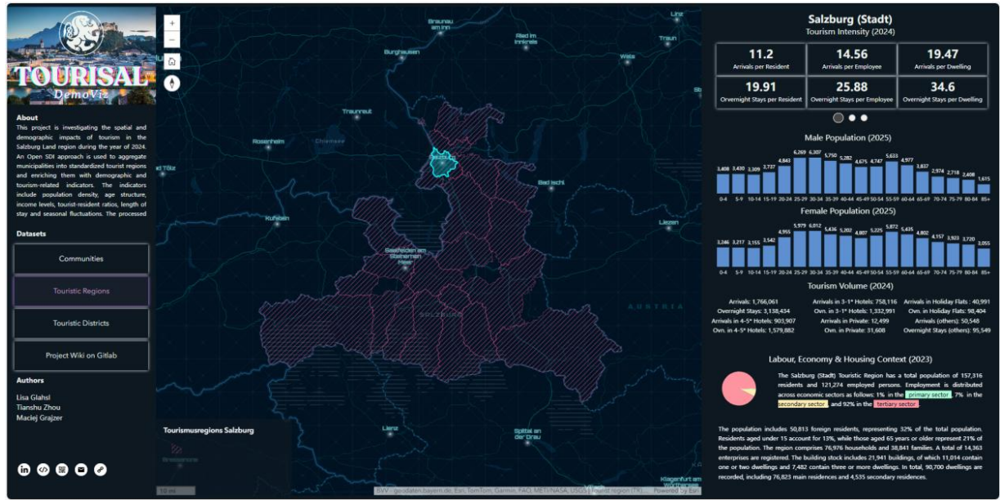
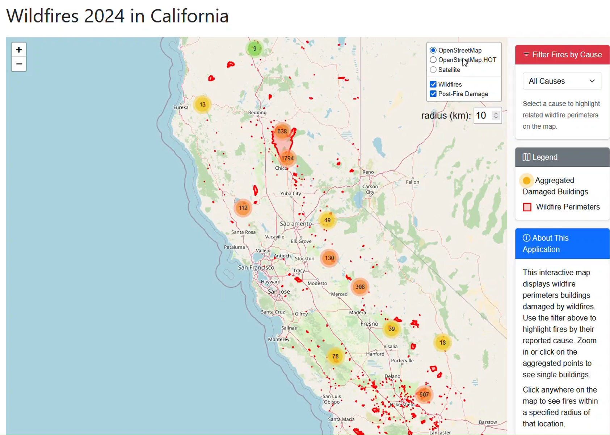
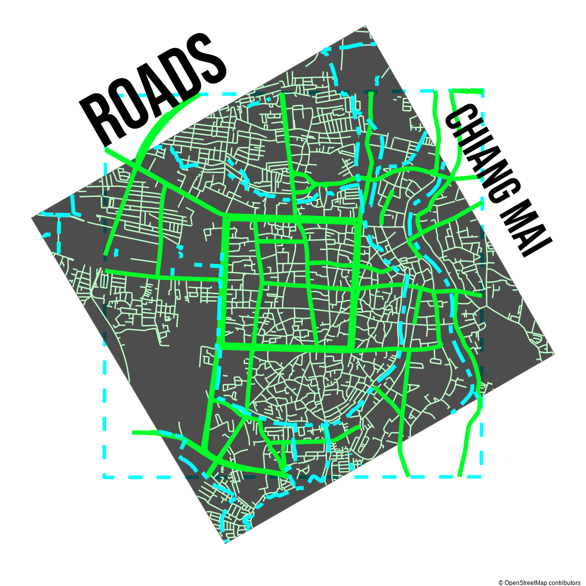
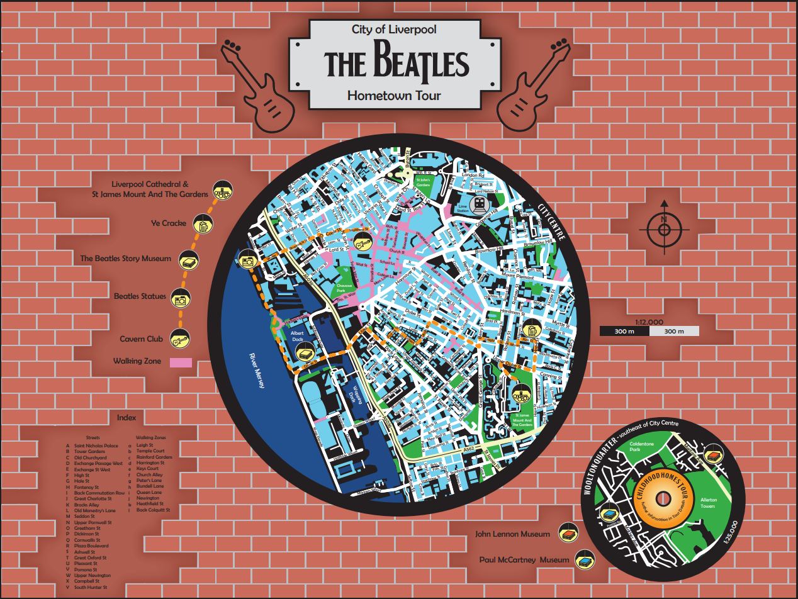
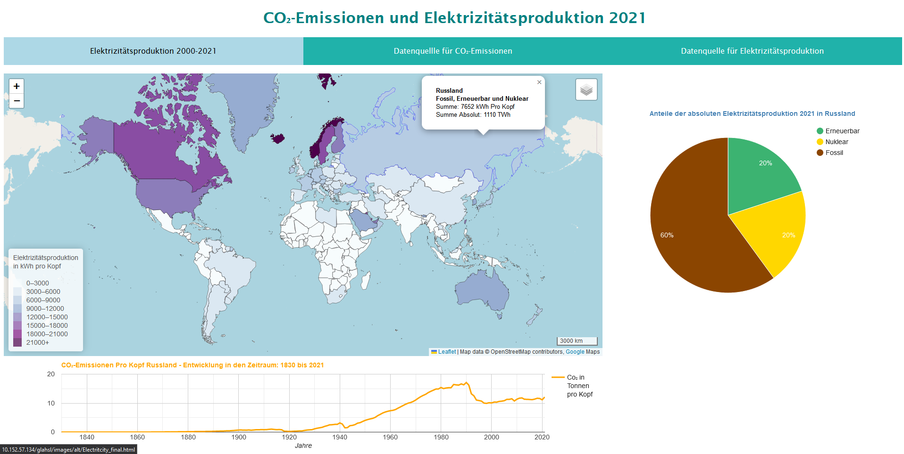

My projects

Map & Web Map: Visualizing Mountain Ecosystem Stability
This project was developed during the 'Advanced Cartography' class in WS25/26. This class challenged us students to choose a Sustainable Development Goal (SDG) and create a static, printable map and an interactive web map. With eye-tracking, the design and usability could be improved by being able to quantify feedback, which would allow for more accurate assessment of the user experience.

Dashboard: Visualization of Salzburg Tourism Regions with Integrated Demographic Data
This group project develops a spatial data infrastructure (SDI) to analyze and visualize the relationship between tourism and demographic structures in Salzburg Land. By integrating geospatial, demographic, and tourism data, a standardized dataset was created. An interactive dashboard was built to present the data.

Web App: Exploring and Analyzing California's Wildfire Data
This web application is the result of the goal to create an interactive web map about wildfires in California. This web map shows the locations of fires that ocurred in 2024. The user is able to engage with the map and create bufferzones to find out which residential areas were affected. Additional information about fire cause and damage are also provided.

Maps: 2 Maps about Chiang Mai's Old Town
R is a programming language for statistics, graphics, and maps! Wait, maps with R? Yes, that was also new to me. In class, we were challenged to create an "ugly" and a "pretty map" using only R, and you can see both above. I can't say which one is uglier or prettier, though. As someone with a cartographic background, I could not bear to create a map with incorrect symbolizations or projections. So, I experimented with R to create creative maps and used additional resources, such as Stadiamaps, for the background map. This was definitely a great way to learn R and experience mapmaking from a programming perspective. Before this, I only knew how to make a map using GIS or Adobe/Affinity products.

Printmap: The Beatles - City of Liverpool
This map was designed for print and was my first major project as a university student. In my third semester (Fall 2021/Winter 2022), I was assigned Liverpool by chance. I decided to create a map for tourists who love the Beatles and want to experience the city where the Beatles grew up. Three months of work went into this product, and now, five years later, I am still very proud of the map I created using only Illustrator. That means I only used OpenStreetMaps as a reference, and I drew every single street, park, and building myself, not to mention the street names. Having gained more cartographic experience, I can see some issues that could be improved, but that is another topic! I will provide additional details about the map's design at a later time. For the time being, you can find an example of the map at the top of this card.

Project ...
...stay tuned for more projects!